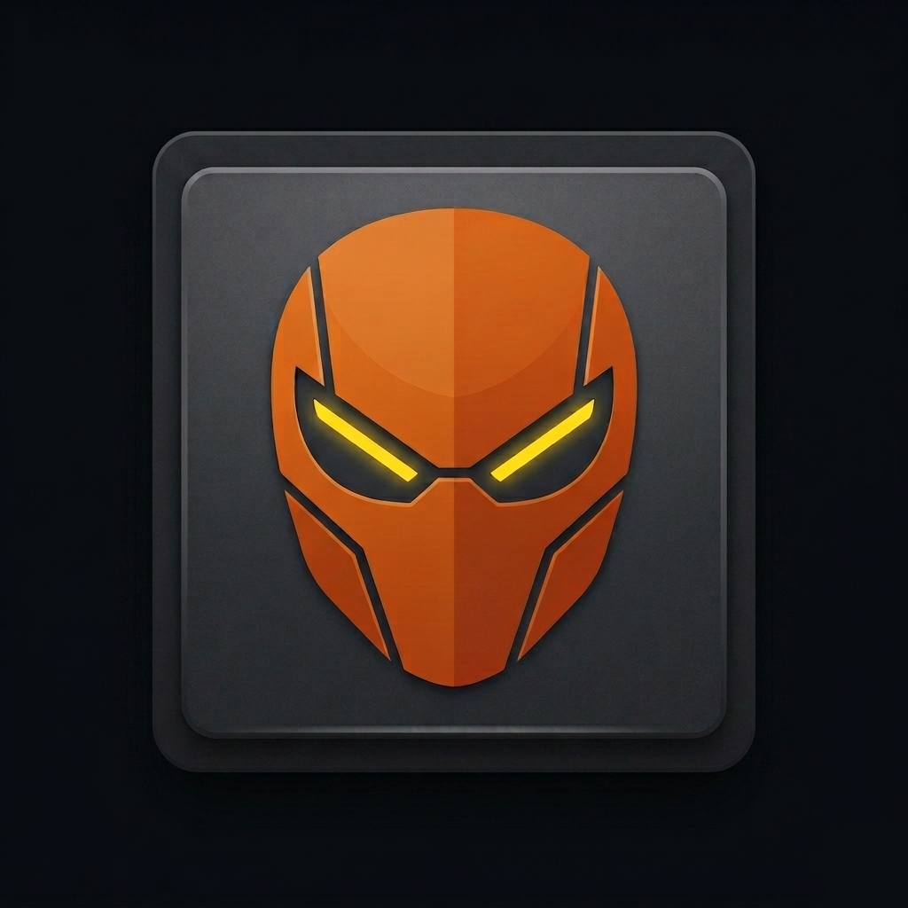

DIX reads your kernel. Claude AI analyzes it. Result: 34 → 91 on real hardware.
Select your hardware and get a score estimate before you even install DIX.
One platform. Multiple tools. Each one solving a specific performance problem.
No configuration files. No manual tuning. DIX handles the entire process from scan to execution.
/proc and /sys in real time. CPU governor, I/O scheduler, memory pressure, NUMA state, hugepages. No guesswork.pkexec. Every parameter change is snapshotted first. One click to revert if needed.Measured on Intel i5-12400 + RTX 3060 + 32 GB DDR4 — Ubuntu 26.04
Results vary by hardware. Score is measured, not estimated by AI.
Anonymous, opt-in telemetry. Every user who shares their results makes DIX smarter for everyone.
| # | Hardware | Distro | Before | After | Gain |
|---|---|---|---|---|---|
| 🥇 | i9-13900K 64GB | Arch | 28 | 94 | +66 |
| 2 | Ryzen 9 7950X | Ubuntu | 31 | 92 | +61 |
| 3 | i7-11800H 32GB | Fedora | 34 | 91 | +57 |
| 4 | Ryzen 7 5800X | Debian | 38 | 89 | +51 |
| 5 | i5-12400 32GB | Ubuntu | 34 | 84 | +50 |
Versioned, dated, honest. No vaporware.
We know what you're looking for. Here it is.
strings ./dix | grep sk-ant.~/.config/pcoptimizer/snapshot.json. One click to revert exactly.